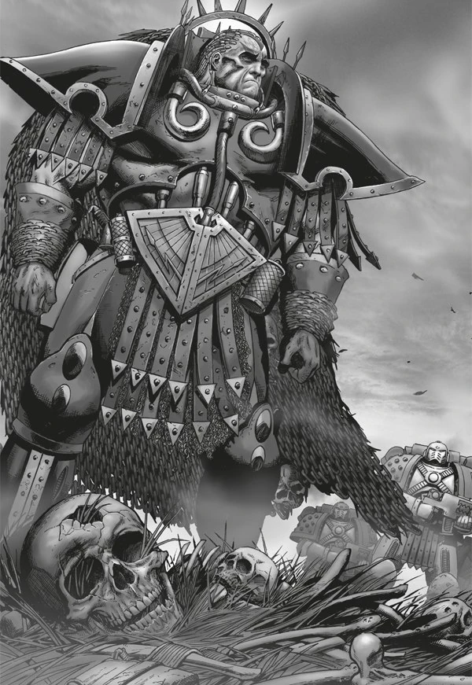

Nuceria
| Nuceria | |
|---|---|
| Former Civilised world; Dead world | |
 Angron among the Ultramarines in the red rain over Nuceria, 008.M31 | |
| System | Nuceria System |
| Segmentum | Segmentum Ultima (location partly expunged) |
| Classification | Civilised world (to 008.M31); Daemon world (008–014.M31); destroyed (c. 014.M31) |
| Former rulers | The High Riders of Desh'ea and the other city-states |
| Population | Several billion (late M30); none since 008.M31 |
| Compliance | Brought into the Imperium with the discovery of Angron, 899.M30 |
| Notable for | Homeworld of Angron, primarch of the World Eaters; the Butcher's Nails; Angron's ascension, 008.M31 |
| Status | Destroyed from orbit by the Dark Angels under Lion El'Jonson, c. 014.M31; records placed under an Edict of Obliteration |
Nuceria was a civilised human world of the Segmentum Ultima on which the infant primarch Angron was raised as a gladiator-slave in the Age of Strife. It was ruled by an aristocracy of slavemasters, the High Riders, from cities such as Desh'ea, and it was there that Angron was fitted with the Butcher's Nails and led the slave revolt that ended with his removal by the Emperor in 899.M30.[1][2]
During the Horus Heresy Angron returned with Lorgar at the end of the Shadow Crusade in 008.M31. The World Eaters and Word Bearers killed every person on the planet, and in a duel against Roboute Guilliman in the city of Meahor Angron was raised into a Daemon Prince of Khorne. Nuceria then became a daemon world. According to the newest records recovered from the Siege era, it was destroyed from orbit by the Dark Angels of Lion El'Jonson in the last days of the Siege of Terra, c. 014.M31. Its name and position were later struck from most Imperial registers.[3][4]
History
[edit]Age of Strife
[edit]Nuceria was settled during the Dark Age of Technology and kept much of its technology through Old Night. Imperial accounts describe a wealthy, advanced world whose cities were divided between an idle ruling class and a vast population of slaves and paupers. The High Riders amused themselves with gladiatorial games, and the most valued fighters were fitted with cranial implants that sharpened aggression and burned away the capacity for pleasure. These implants are known in the Imperium as the Butcher's Nails.[2][1]
The capsule carrying Angron came down on Nuceria in the late Age of Strife, after the scattering of the primarchs from Terra (c. 800.M30, date estimated from the primarchs' scattering). The child was wounded but alive, and was sold into the household of the ruling clan of Desh'ea. He was trained in the arenas, fitted with the Nails, and became the greatest of the city's champions.[1]
The slave revolt
[edit]In the late 890s.M30 (date estimated) Angron led a mass escape from the arenas of Desh'ea. His fellow gladiators fought their way out of the city, and nearly two thousand of them reached the mountains, where they held out against the armies of the High Riders. When the revolt was trapped and outnumbered in 899.M30, the Emperor arrived in orbit and took Angron off the planet by teleportation, against his will. The gladiators he left behind, including his closest companions, were destroyed in the last battle. Angron never forgave the Emperor, and took command of the XII Legion, the War Hounds, which he renamed the World Eaters.[1][2]
Nuceria was entered in the Imperial registers as compliant in 899.M30. Imperial authorities left its old government largely in place.[5]
The Purge of Nuceria
[edit]In 008.M31, at the end of the Shadow Crusade against Ultramar, Lorgar led Angron back to his homeworld. They found that the High Riders had taught the people of Nuceria that Angron had fled his own army. Angron ordered the death of the whole population, and the World Eaters and Word Bearers carried it out over several days in the red rain of the Ruinstorm.[3]

A large Ultramarines fleet under Roboute Guilliman, with Mechanicum allies, arrived in orbit and landed to stop the killing. Guilliman fought Angron and Lorgar together in the city of Meahor. At the height of the duel Lorgar completed the ritual he had been preparing through the whole crusade, and Angron was raised into a Daemon Prince of Khorne. The Ultramarines were forced to withdraw, and Nuceria was left a dead world.[3][1]
Daemon world and destruction
[edit]After the purge, Nuceria was held by the servants of Khorne. Accounts preserved by the Ordo Malleus say that six of the god's greatest daemons fought on its sands for his favour, and that Ar'gakhol the Goreborn emerged as the victor (date unrecorded; c. 008–013.M31, estimated).[2]
Newer records of the Siege era say that Nuceria was destroyed from orbit by the Dark Angels under Lion El'Jonson, who struck at the Traitors' worlds while the Siege of Terra was fought (c. 014.M31). The same records report that Angron felt the planet's death from the walls of the Imperial Palace. Earlier Imperial records held only that Nuceria was a lifeless world whose location had been lost.[4][a]
Since the Heresy
[edit]After the Great Scouring (014–c. 021.M31), the name of Nuceria was removed from most Imperial registers under an Edict of Obliteration meant to erase the origin of the Daemon Primarch. Its location is now known only from sealed archives, and scholars disagree whether its remains lie in the Segmentum Ultima or elsewhere. The Imperial Cult treats it as a cursed name. In the Era Indomitus the Inquisition has kept the edict in force, although Angron himself returned to the material universe in the Arks of Omen (c. 999.M41–M42).[2][6]
Geography and society
[edit]Nuceria was a temperate world of dry plains, mountain ranges and city-states. The cities were ruled from the high towers of the High Riders, while the slums below housed the labourers and the arena slaves. The mountains to which the gladiators fled were the only wilderness of note. Society was organised around the arena: the games were the main entertainment of the ruling class and the means by which it kept the poor afraid. The technology of the Butcher's Nails is the planet's lasting legacy to the galaxy, because the World Eaters adopted it across the Legion after Angron took command.[1][2]
Timeline
[edit]| Date | Event |
|---|---|
| Dark Age of Technology | Nuceria settled (date unrecorded) |
| c. 800.M30 (estimated) | Angron's capsule lands near Desh'ea |
| late 890s.M30 (estimated) | Slave revolt of Desh'ea |
| 899.M30 | The Emperor removes Angron; the revolt is crushed; Nuceria made compliant |
| 008.M31 | Purge of Nuceria; Angron raised as a Daemon Prince in the duel with Guilliman at Meahor |
| c. 008–013.M31 (estimated) | Daemons of Khorne contest the world; Ar'gakhol victorious |
| c. 014.M31 | Nuceria destroyed from orbit by the Dark Angels |
| M31 (after the Scouring) | Edict of Obliteration on the world's records |
See also
[edit]Notes
[edit]- ^ The date of the destruction is estimated from the sequence of events in the Siege of Terra.
References
[edit]- ^ a b c d e f Liber Primarchus (M32, revised M41). Administratum Archive, Terra.
- ^ a b c d e f Liber Malum (sealed). Library Sanctus, Terra.
- ^ a b c Chronicles of the Heresy (sealed). Logos Historica Verita, Terra.
- ^ a b Annals of the First Legion: the Return of the Lion (sealed). Logos Historica Verita, Terra.
- ^ Codex Imperialis (rev. 980.M41). Adeptus Terra.
- ^ Records of the Indomitus Crusade (ongoing). Office of the Lord Commander.